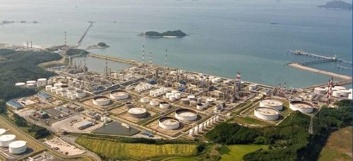

현대중공업그룹 핵심계열사로 국내 최초의 '민간' 정유회사이다.[3] 정유사 점포 수 기준 국내 2위이다. 주요 사업은 정유제품, 윤활기유, 윤활유, 석유화학 제품의 제조·판매·수송, 수출입을 영위하고 있으며, 본사는 충청남도 서산시 대산읍 평신2로 182에 위치해 있다.
2002년 현 사명으로 개칭한 후, 2003년 자회사 인천정유를 분리시킨 후 2009년 코스모와 함께 HCP를 세웠다. 2010년 현대중공업그룹이 IPIC와의 법정 분쟁 끝에 인수했다.
2010년대 중반 극악의 조선업 침체에서 현대중공업그룹을 지탱해준 회사이기도 하다. 사실 조선업 위기일 때도 현대중공업그룹은 위기가 아니라는 말이 많았다. 사실상 조선소 뿐인 대우조선해양이나 기타 중견급 조선사와 달리 현대중공업그룹은 현대오일뱅크가 막대한 현금을 벌어다줬기 때문이다. 현대건설기계나 현대일렉트릭의 매출도 있지만 규모로 보면 현대오일뱅크의 현금창출력과 실적에 비하기는 어렵다.
본사 : 충청남도 서산시 대산읍 평신2로 182

서울사무소 : 서울특별시 중구 통일로10 연세빌딩 20층